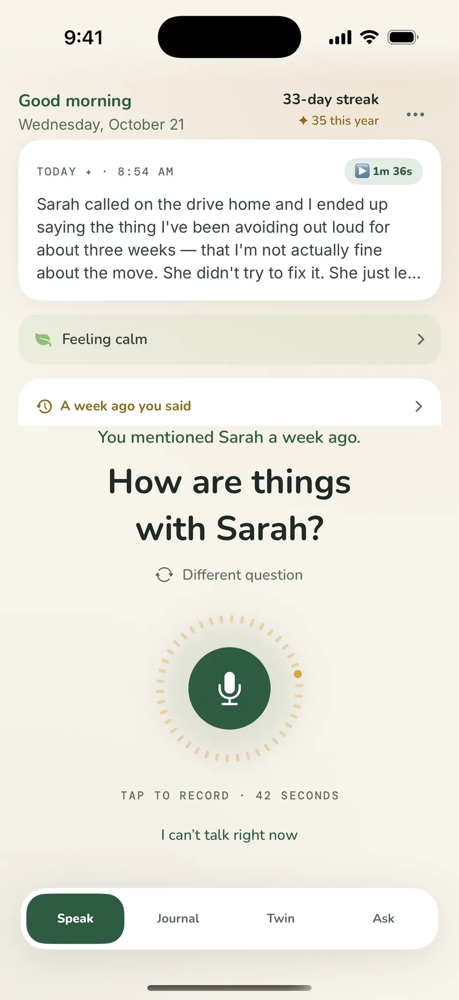

Say it out loud.Nobody else
hears it.
A free voice journal. Your phone writes it down and keeps every word to itself.
iPhoneAndroidgetdailyvox.com

- parked, engine off
- on the walk home
- 0 bytes to usthere is no DailyVox server
- Data Not Collectedthe App Store label, verbatim
- Now in 6 languagesHallo · Hola · Bonjour · Ciao · Olá
- 42
seca night